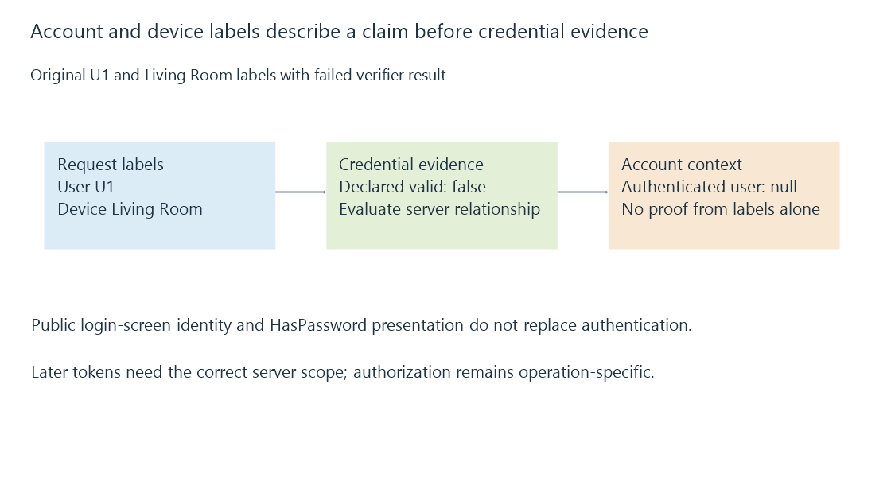

Media server authentication and credential evidence
Media-server authentication verifies credential evidence for a requested account, while user/device labels and later operation permissions have separate roles.
A client names a user and describes its device. The server still needs evidence that the request is entitled to act as that account.
Authentication evaluates that credential relationship. It precedes deciding which library or operation the account is allowed to use.
Labels describe a claim
A user ID, display name and device ID can identify intended objects in a request. They are not secret proof merely because they are unique.
An original reduced decision is:
{
"requestedUser": "U1",
"deviceLabel": "Living Room",
"credentialValid": false,
"authenticatedUser": null
}
The user and device labels are present, but the declared verifier result is false. No authenticated account follows from those labels alone.

The fields are explanatory outcomes, not native Emby authentication input.
A login establishes evidence for later requests
Emby’s developer documentation describes user authentication and a successful result with an access token. Later requests carry that token under the documented protocol.
The application serializes credential information in its request body. HTTPS protects the transport to the validated endpoint; application-body text and plaintext transmission over an unprotected connection are different concepts.
A token then represents the accepted relationship according to its scope/lifetime. It needs protection as credential material, rather than being treated like a harmless device label.
A displayed user still needs authentication
The documented public-user list supports login-screen presentation. Its presence identifies selectable accounts; it does not establish that a viewer has authenticated as one.
The same documentation says authentication is still required when the displayed user’s HasPassword value is false. The intended protocol result matters, rather than inferring access from a missing password prompt.
A client can consequently show the correct account image while failing to establish its valid request context.
The server and account scopes belong together
An account on one server is not automatically the same account on another. A token accepted by server A should not be sent as proof to unrelated server B merely because the user’s displayed name matches.
Emby’s documented token storage guidance associates it with the server ID. User identity develops that scope.
NIST’s authentication guidance supplies broader verifier/session concepts. It is not a claim that every Emby authentication route implements a particular government assurance level.
Successful authentication leaves an authorization question
A valid U1 request can still be denied administration, deletion or access to another user’s library scope.
Authorization evaluates those operations. Login sessions follows persistence and revocation of the established evidence.
See Also
- Media server authorization and operation-specific access
- Server user identity and scoped account state
- Login sessions, tokens and revocation
- HTTPS and TLS: transport protection and peer identity